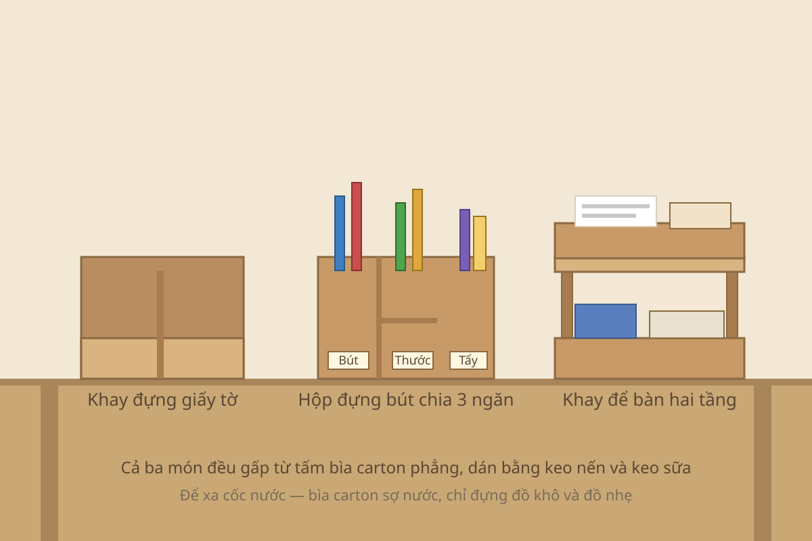

Tự làm hộp đựng bút và khay để bàn từ bìa carton
Tác giả: Nguyễn Trung Đức
Bàn làm việc trong nhà nhỏ thường bừa không phải vì có quá nhiều đồ, mà vì bút, thước và giấy tờ không có chỗ cố định. Bút nằm lẫn với giấy nháp, và mỗi lần cần một cây bút là phải bới cả mặt bàn. Thay vì mua thêm một bộ hộp đựng mới, bạn có thể làm một bộ đồ đựng vừa với mặt bàn của mình, từ những tấm bìa carton còn lại sau khi nhận hàng.
Bài viết này hướng dẫn làm ba món đồ đựng đặt trên bàn làm việc: một hộp đựng bút chia ngăn, một khay để bàn hai tầng và một khay đựng giấy tờ. Cả ba món đều gấp lên từ một tấm bìa carton phẳng.
Trong bài này chỉ có đồ đựng làm từ bìa carton — không có cây cảnh, không có hoa tươi. Bài cũng khác với bài viết về góc làm việc của website này — bài đó nói về cách sắp xếp góc làm việc nói chung, còn bài này chỉ làm ra ba món đồ đựng cụ thể để đặt lên bàn — và khác với hộp bút từ lon cũ trong bài viết về mười món đồ trang trí, vì ba món trong bài này được gấp lên từ tấm bìa carton phẳng, có chia ngăn và có khay nhiều tầng.
Chọn bìa carton nào dùng được
Nguồn bìa tốt nhất trong nhà là thùng carton sau khi nhận hàng: bạn mở thùng ra, cắt bỏ phần nắp và phần đáy đã dán băng keo, rồi giữ lại các mặt phẳng lớn nhất. Một thùng hàng cỡ vừa thường cho đủ bìa để làm cả ba món trong bài này. Ưu tiên loại bìa sóng ba lớp — hai mặt giấy phẳng kẹp một lớp giấy sóng ở giữa, nhìn thấy rõ ở mép cắt — vì loại bìa này dày và cứng, gấp lên thành hộp thì đứng thẳng và giữ dáng tốt. Bìa một lớp mỏng chỉ hợp làm vách ngăn và lót đáy, không nên làm thành hộp vì hộp sẽ mềm và dễ nghiêng.
Tấm bìa chọn làm hộp phải sạch, khô và không có mùi lạ. Bỏ qua tấm bìa đã từng bị ướt mưa, tấm bìa có vết mốc, tấm bìa dính dầu mỡ và tấm bìa từng đựng hóa chất, sơn hay dầu nhớt. Bìa đã ướt dù phơi khô vẫn mềm hơn bìa khô và dễ mốc trở lại. Nếu bạn không biết chắc thùng carton từng đựng thứ gì, hãy chọn một thùng khác rõ ràng hơn, ví dụ thùng đựng sách, quần áo hay đồ gia dụng khô.
Dụng cụ và cách cắt an toàn
Bạn cần chuẩn bị đủ dụng cụ trước khi cắt: dao rọc giấy có lưỡi mới, thước kim loại dài khoảng 30 cm, tấm lót cắt hoặc một tấm bìa dày lót dưới chỗ cắt, bút chì, kéo, keo nến kèm súng bắn keo, keo sữa, và vài chiếc kẹp giấy giữ mối dán khi chờ keo khô.
Dao rọc giấy là dụng cụ chính, vì kéo cắt bìa dày vừa tốn sức vừa dễ làm mép bìa bị nhăn. Dùng thước kim loại thay cho thước nhựa: lưỡi dao có thể cứa vào thước nhựa và làm lệch đường cắt. Tấm lót cắt vừa bảo vệ mặt bàn, vừa giữ cho lưỡi dao không bị cùn nhanh.
Về keo, bạn nên dùng hai loại cho hai việc khác nhau. Keo nến dán nhanh và giữ chắc, hợp để dán thành hộp, trụ khay và các góc chịu lực: bạn bóp một đường keo mỏng và đều, ép chặt hai mặt bìa rồi giữ yên vài chục giây cho keo nguội hẳn. Keo sữa khô chậm hơn nhưng dán phẳng và không làm phồng giấy, hợp để dán giấy bọc và vách ngăn mỏng: bạn quét một lớp mỏng, ép chặt rồi dùng kẹp giấy kẹp lại chờ keo khô hẳn.
Cách cắt bìa carton có một nguyên tắc đơn giản: rạch nhẹ nhiều lần thay vì ấn mạnh một lần. Bạn đặt thước kim loại dọc theo đường đã vẽ, rạch một đường nhẹ để tạo rãnh dẫn, rồi rạch lại theo đúng rãnh đó thêm một hoặc hai lần nữa cho tới khi bìa đứt hẳn. Đường gấp cũng cần khía trước khi gấp: bạn dùng sống dao hoặc đầu bút bi đã hết mực vạch một đường nhẹ dọc theo thước, để bìa gập đúng theo đường đã khía. Bạn chỉ nên khía nhẹ vừa đủ, không khía sâu tới mức cắt đứt lớp sóng ở giữa.
Dao rọc giấy rất sắc: bạn luôn cắt hướng ra xa tay, tay giữ thước đặt phía sau lưỡi dao, thu lưỡi dao lại mỗi khi đặt dao xuống bàn, và thay lưỡi mới khi thấy dao phải ấn mạnh mới cắt được. Trẻ nhỏ chỉ nên làm cùng người lớn: người lớn cầm dao cắt những đường dài, trẻ chỉ làm phần gấp, dán và trang trí.
Hộp đựng bút chia ngăn
Hộp đựng bút trong bài này được gấp lên từ một tấm bìa phẳng duy nhất, vẽ thành hình chữ thập rồi gấp lên, khác với cách cuộn bìa thành ống tròn hay ghép bốn thành rời rạc. Bạn vẽ lưới lên mặt trong của tấm bìa: một ô vuông ở giữa làm đáy hộp, và bốn ô chữ nhật gắn vào bốn cạnh của ô đáy làm bốn thành hộp. Số đo gợi ý của bài này là đáy 9 cm nhân 9 cm, thành cao 11 cm, đủ để bút đứng vững mà đầu bút vẫn thò ra ngoài để bạn cầm lấy dễ dàng. Bạn vẽ thêm tai dán rộng khoảng 1,5 cm ở hai thành đối nhau.
Sau khi vẽ xong, bạn cắt rời lưới theo đường ngoài cùng, rồi khía nhẹ bốn đường gấp quanh ô đáy. Bạn gấp bốn thành hộp lên, bôi keo nến lên tai dán rồi ép tai dán vào mặt trong của thành bên cạnh, giữ yên cho keo nguội. Bạn dán hai tai dán đối nhau trước rồi mới dán hai tai còn lại. Bạn dán thêm một ô bìa mỏng lót trong đáy hộp để đáy dày gấp đôi và che đi mối dán ở đáy.
Chia ngăn là bước làm cho hộp bút này khác với một chiếc hộp trơn. Bạn làm hai vách ngăn bằng bìa mỏng, đều cao 8 cm, thấp hơn thành hộp một chút để tay bạn với vào lấy bút dễ dàng. Vách thứ nhất dài bằng chiều rộng trong lòng hộp, vách thứ hai chỉ dài bằng một nửa chiều rộng trong lòng hộp. Bạn khía một rãnh dọc ở giữa vách thứ nhất, từ mép trên xuống tới giữa vách, và một rãnh tương tự ở vách thứ hai, từ mép dưới lên tới giữa vách. Sau đó bạn gài hai rãnh vào nhau, hai vách sẽ khóa lại thành hình chữ T, và bạn đặt cụm vách này vào trong hộp.

Cụm vách chữ T chia hộp thành ba ngăn: ngăn lớn nhất để bút bi và bút chì hay dùng hằng ngày, ngăn thứ hai để bút màu, bút dạ và thước kẻ, ngăn nhỏ còn lại để đồ lặt vặt như tẩy, ghim bấm và kẹp giấy. Bạn không nên dán cố định vách ngăn, để khi cần đựng thước dài hay kéo thì rút vách ra cho hộp thành một ngăn lớn.
Khay để bàn hai tầng
Khay hai tầng giúp mặt bàn có thêm một tầng để đồ mà không cần thêm diện tích bàn. Tầng dưới để sổ tay nhỏ, dây sạc và tai nghe. Tầng trên để giấy nháp, phong bì và những món đồ bạn hay lấy ra lấy vào trong ngày. Hai tầng chồng lên nhau theo chiều cao, nên khay hợp với góc bàn kê sát tường, nơi bạn không thể xếp đồ sang ngang.
Mỗi tầng là một khay nông làm giống hệt nhau: bạn vẽ lưới khay gồm một ô đáy hình chữ nhật 24 cm nhân 16 cm và bốn thành cao 4 cm gắn quanh đáy, rồi cắt, khía và gấp lên giống như cách làm hộp bút. Điểm khác duy nhất là thành trước của khay chỉ cao khoảng 2,5 cm, thấp hơn ba thành còn lại, giúp bạn nhìn thấy đồ trong khay và lấy đồ ra dễ dàng. Bạn dán tai dán ở bốn góc khay.
Bốn trụ góc là phần nối hai tầng khay lại với nhau. Bạn làm trụ bằng cách cuộn một dải bìa dài quanh một cây bút chì rồi dán mép lại thành ống tròn, hoặc gấp một dải bìa thành ống vuông rồi dán mép. Mỗi trụ cao khoảng 9 cm, đủ để bạn thò tay vào tầng dưới lấy sổ mà không vướng tầng trên. Bạn làm bốn trụ giống hệt nhau, dán chân trụ lên bốn góc của khay tầng dưới bằng keo nến, rồi đặt khay tầng trên lên đầu bốn trụ, căn cho bốn góc khay khớp với bốn đầu trụ rồi dán lại.
Trước khi xếp đồ lên, bạn ấn nhẹ bốn góc khay để kiểm tra độ cân bằng: nếu khay lắc lư, có thể một trụ bị ngắn hơn ba trụ còn lại, bạn tháo tầng trên ra và dán thêm một miếng bìa nhỏ vào đầu trụ ngắn rồi lắp lại. Bạn nên đặt khay sát tường để tường đỡ một phía. Khay hai tầng chỉ hợp với đồ nhẹ, không nên để sách dày hay chai nước lên tầng trên, vì bìa carton sẽ võng xuống theo thời gian.
Khay đựng giấy tờ
Khay đựng giấy tờ dành riêng cho giấy tờ hay dùng: giấy đang làm dở, giấy đã xong chờ cất, và phong bì chưa mở. Giấy tờ để thành chồng trên mặt bàn rất nhanh bị lẫn lộn, còn giấy tờ cất vào ngăn kéo thì mỗi lần cần lại phải mở ngăn kéo ra tìm. Một khay nông đặt ở góc bàn giúp bạn nhìn thấy giấy và lấy đúng tờ mình cần.
Bạn không cần nhớ khổ giấy hay tra bảng kích thước, vì cách đo trực tiếp chính xác hơn. Bạn đặt tờ giấy hay dùng nhất lên tấm bìa, dùng bút chì vẽ viền quanh tờ giấy, rồi vẽ thêm một đường nữa cách đường viền khoảng 1 cm mỗi chiều làm mép đáy khay, đủ rộng để giấy nằm lọt trong khay mà không bị cấn mép. Bạn vẽ thêm bốn thành khay quanh đáy: thành sau cao 8 cm, hai thành bên vát chéo xuống còn 3 cm ở phía trước, và thành trước cao 3 cm.
Bạn cắt, khía và gấp khay giống như cách làm khay hai tầng, rồi dán tai dán ở bốn góc. Sau đó bạn làm một vách đứng để chia khay thành hai ngăn: ngăn trước đựng giấy đang làm, ngăn sau đựng giấy đã xong. Vách đứng cao bằng thành sau, rộng bằng chiều rộng trong lòng khay, có khoét một hình bán nguyệt nhỏ ở giữa mép trên để ngón tay bạn có chỗ luồn vào rút giấy ra. Bạn đặt vách vào giữa khay, dán chân vách xuống đáy khay bằng keo nến, rồi dán hai mép vách vào hai thành bên.
Bạn nên đặt khay giấy ở góc bàn phía xa tay thuận, để chồng giấy không vướng khuỷu tay khi bạn viết, và không nên chồng giấy cao quá thành sau của khay, vì chồng giấy cao quá sẽ đổ nghiêng khi bạn rút một tờ ra. Khi giấy đã xong, bạn nên cất giấy vào bìa hồ sơ hoặc kẹp file ngay, đừng để giấy đã xong nằm mãi trong khay.
Trang trí và làm chắc hộp carton
Đồ carton mộc có màu nâu và còn lộ mép cắt, nên bước trang trí vừa làm đồ đẹp hơn vừa làm đồ bền hơn. Cách bọc ngoài đơn giản nhất là dùng giấy màu, giấy gói quà cũ hoặc vải vụn còn lại trong nhà. Bạn nên dán giấy bọc lên mặt ngoài của từng tấm bìa trước khi gấp thành hộp, vì dán lên tấm bìa phẳng dễ miết cho phẳng hơn là dán lên hộp đã thành hình. Bạn quét keo sữa thành một lớp mỏng và đều lên mặt bìa, đặt giấy bọc lên rồi miết từ giữa ra bốn mép cho hết bọt khí, chừa giấy bọc thừa ra ngoài mép bìa khoảng 1 cm rồi gấp phần thừa vào mặt trong của thành hộp và dán lại để mép giấy bọc không bị bong ra sau này.
Gia cố là bước quyết định hộp carton của bạn dùng được lâu hay chỉ dùng được vài tuần. Bạn nhỏ keo nến vào bốn góc trong của hộp và khay, rồi dán thêm một miếng bìa tam giác nhỏ vào mỗi góc để giữ cho hai thành hộp vuông góc với nhau, nên hộp không bị xệ sang một bên khi đựng nhiều đồ. Bạn cũng nên dán thêm một dải bìa mỏng dọc theo mép trên của thành hộp, vì đó là chỗ tay bạn chạm vào nhiều nhất. Bạn nên để keo khô hẳn rồi mới xếp đồ vào, vì đồ nặng đặt lên mối keo chưa khô sẽ làm mối dán bung ra.
Đồ carton có một giới hạn bạn cần nhớ: bìa carton sợ nước. Bạn nên để hộp bút và khay giấy xa cốc nước và xa cửa sổ bị mưa hắt vào. Bạn không nên đựng đồ ướt trong hộp carton, ví dụ cốc chưa lau khô, khăn ẩm hay chai nước bị đọng hơi nước bên ngoài. Bạn cũng không nên đựng đồ nặng trong khay carton, ví dụ chồng sách dày hay chai nước đầy, vì đáy khay sẽ võng xuống và các góc dán sẽ bung ra theo thời gian. Hộp đã ướt và mềm thì nên làm hộp mới thay vì cố dùng tiếp.
Thời gian làm mỗi món chỉ là ước chừng cho người mới làm lần đầu — hộp bút và khay giấy khoảng dưới một giờ, khay hai tầng khoảng một buổi chiều — và chưa được đo thực tế từng món.
Kết luận
Ba món trong bài này — hộp đựng bút chia ngăn, khay để bàn hai tầng và khay đựng giấy tờ — đều bắt đầu từ cùng một cách làm: vẽ lưới lên tấm bìa phẳng, cắt theo thước, khía đường gấp rồi dán lại. Ba việc cần nhớ là: chọn bìa dày, sạch và khô; cắt nhẹ nhiều lần và khía đường gấp trước khi gấp; dán đáy hai lớp và gia cố bốn góc.
Bạn nên làm hộp đựng bút trước, vì đó là món dùng hằng ngày và làm nhanh nhất. Bạn đặt hộp bút lên bàn, dùng thử vài ngày rồi mới làm khay hai tầng và khay giấy tờ. Khi ba món đồ đựng đã có chỗ trên bàn, bạn xem lại bài viết về góc làm việc để xếp chúng vào đúng vị trí, sao cho món hay dùng nằm trong tầm tay và món ít dùng nằm ở góc xa hơn.
Nguồn tham khảo
- In Bao Bì Trí Phát, "Hướng Dẫn Các Cách Làm Hộp Đựng Bút Bằng Bìa Carton Đơn Giản, Dễ Làm" — dùng cho danh mục dụng cụ làm hộp bút carton (dao rọc giấy, keo nến, thước, kéo), cách làm hộp vuông có chừa rìa khoảng 1 cm để dán thân hộp, và cách chia nhiều ngăn bằng vách ngăn giấy hình chữ nhật (truy cập 23/11/2026): https://intriphat.com/blog/lam-hop-dung-but-bang-bia-carton/
- In Bao Bì Giấy Bảo Ngọc, "Cách Làm Hộp Đựng Bút Bằng Bìa Carton Đơn Giản Tại Nhà" — dùng cho danh mục các loại keo (keo 502, keo sữa, keo nến), cách làm vách ngăn bằng bìa cứng dán bằng keo sữa, và ý bìa carton tái chế thành nhiều vật dụng hữu ích trong nhà (truy cập 23/11/2026): https://inbaobigiay.vn/lam-hop-dung-but-bang-bia-carton.html
- Be Yourself Studios, "DIY Desk Organizer" — dùng cho cấu trúc bộ đồ để bàn bằng bìa carton gồm ngăn đựng giấy nằm ngang, ngăn đựng giấy đứng và hộp đựng bút, và thứ tự lắp ráp dán đáy với thành trước rồi mới lắp vách ngăn bên trong (truy cập 23/11/2026): https://beyourselfstudios.com/diy-desk-organizer/
- Little Coffee Fox, "Upcycled DIY Desk Organizer" — dùng cho cách cắt bìa trên tấm lót cắt bằng dao rọc, cách đo chiều cao bằng thước trước khi cắt, và cách gia cố đáy hộp bằng thêm một lớp keo để đáy chắc và bền hơn (truy cập 23/11/2026): https://littlecoffeefox.com/upcycled-diy-desk-organizer/